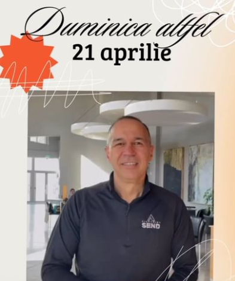
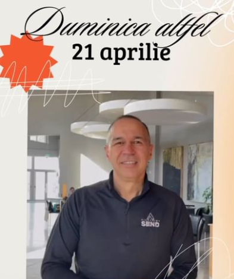

Cuvântul Scripturii este fundamental pentru intretinerea si edificare unei credinte sănătoase. De aceea, noi la Ceneza acordăm o atentie deosebită predicärii Evangheliei. In fiecare duminica dimineata parcurgem predici care sunt parte a unor serii de mesaje menite sa consolideze relatia noastră cu Dumnezeu.
În acest sezon spiritual vom parcurge patru serii de predicii. Pentru inceput ne vom indrepta atentia asupra bisericii din Antiohia asa cum este ea prezentată în Fapte. Din istoria acestei biserici vrem să desprindem principii practice si actuale pentru noi astăzi. In următoarea serie de predici ne dorim sã parcurgem impreuna o epistolă a Noului Testament din care să invatăm modul in care trebuie sã ne trãim credinta. Mai apoi, ne propunem să abordăm o temă care suscită multe dezbateri si interpretări în zilele noastre si anume sfârsitul lumi.
Prin acestã serie de predici vrem sã creionăm acele certitudini pe care fiecare om trebuie sã le aibă cu privire la cea de-a doua venire a lui Hristos. In încheierea acestui an bisericesc vom parcurge o serie de predici în care vom aborda câteva lupte majore pe care acestã generatie le dã la nivelul minti. Pe lângă predicile de învătătură de duminica dimineata vom avea si mesaje biblice cu scop evanghelistic în fiecare duminică seara.